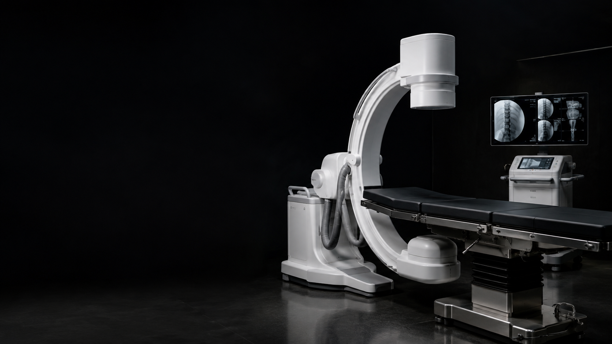
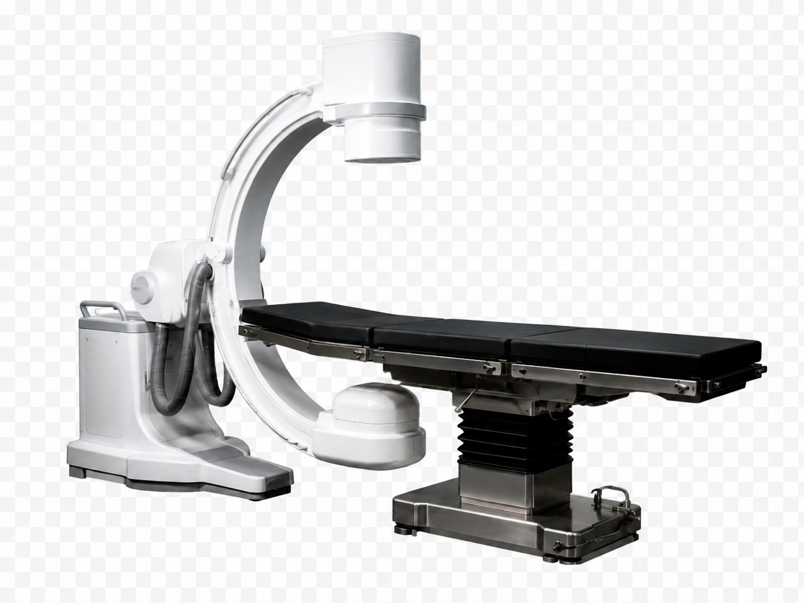
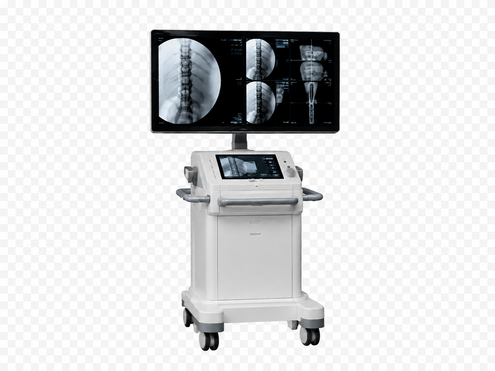
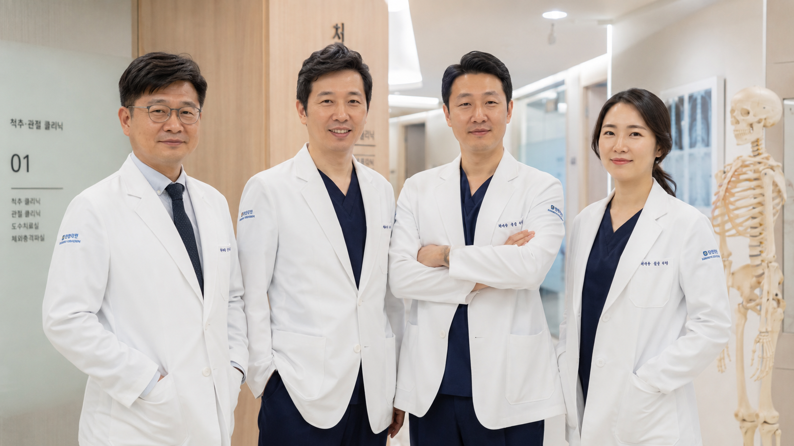
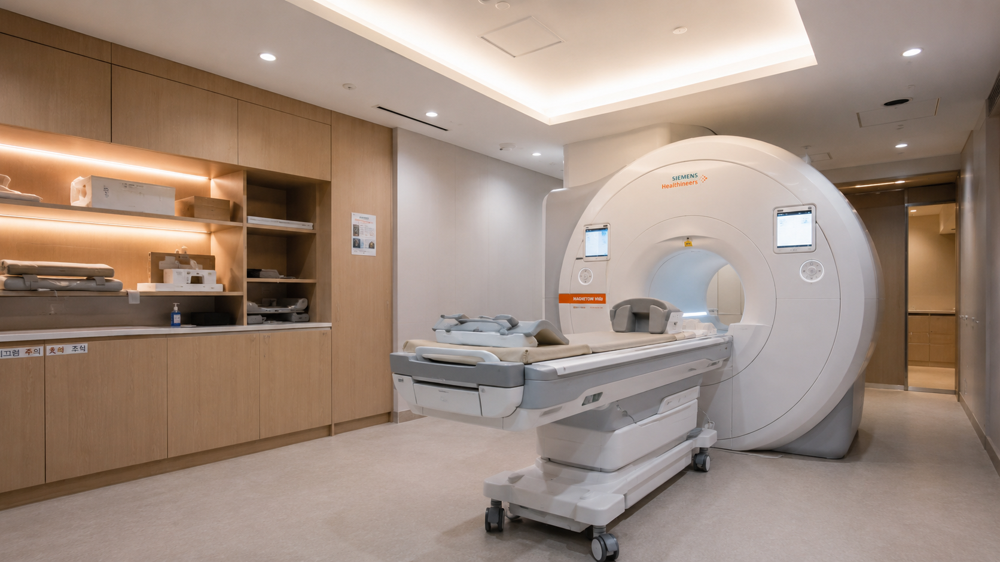
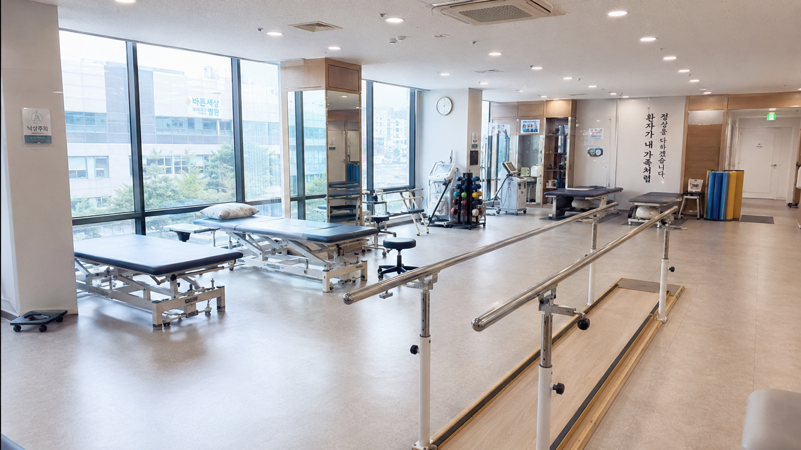
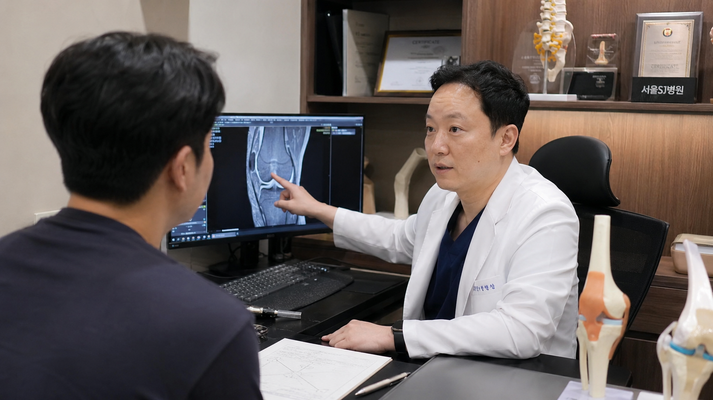

서울 ○○구 · 정형외과 전문의
MRI, X-ray, 초음파, C-arm 정밀 진단 장비를 갖춘
관절·척추·스포츠 손상·재활 치료 전문 클리닉
OUR PHILOSOPHY
참본 정형외과는 정형외과 전문의의 정확한 진단을 바탕으로
비수술 치료부터 수술, 재활까지 원스톱 의료 서비스를 제공합니다.
최신 의료 장비와 풍부한 임상 경험으로 환자 맞춤형 치료를 실현합니다.
임상 경험
연간 진료
수술 집도
최신 의료장비
MEDICAL TEAM


PRECISION DIAGNOSIS
TREATMENTS
퇴행성 관절염, 반월상 연골 파열, 십자인대 재건, 인공관절 치환술
회전근개 파열, 오십견, 어깨 충돌 증후군, 관절경 수술
허리 디스크, 척추관 협착증, 경추 통증, 척추 후만증 교정
인대 손상, 근육 파열, 골절, 스포츠 재활 및 퍼포먼스 회복
PRP 자가혈 주사, 히알루론산 관절 주사, 신경차단술, 체외충격파
도수 교정, 운동 치료, 재활 프로그램, 수술 후 재활 관리

REHABILITATION
최신 재활 치료 장비를 갖춘 전용 재활 공간에서
전담 물리치료사가 1:1 맞춤 재활 프로그램을 제공합니다.
CONSULTATION
진단 결과부터 치료 계획, 예후 관리까지
환자와 보호자분이 충분히 이해하실 수 있도록
상세히 설명드리는 진료를 약속합니다.

VISIT US